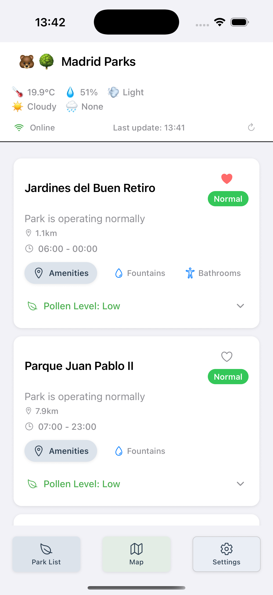
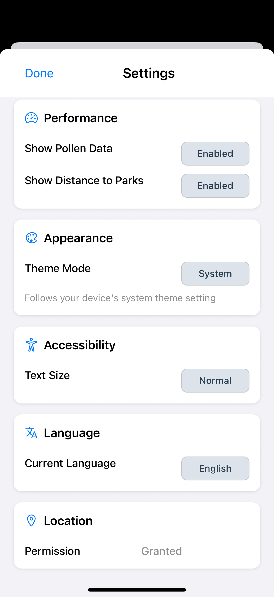
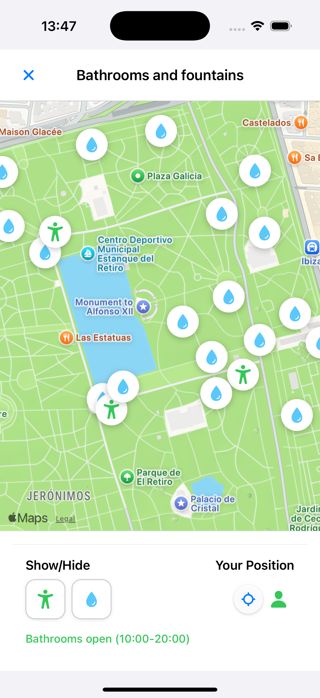

Plan Your Outdoor Adventures with Confidence
Madrid Parks provides comprehensive real-time information about Madrid's parks, including operational status, weather conditions, pollen levels, and opening hours. Make informed decisions about your outdoor activities using official city data.
Real-time Status Updates
Get live updates on park operational status including open/closed states, alerts, and temporary closures from Madrid's official API.
Weather Integration
Access current temperature, humidity, wind conditions, precipitation, and solar radiation data to plan your outdoor activities perfectly.
Pollen Tracking
Monitor pollen levels by type (trees, grasses, herbs) and species to avoid allergy triggers and plan your park visits accordingly.
Interactive Maps
Navigate parks with detailed maps showing amenities, fountains, bathrooms, and points of interest to enhance your outdoor experience.
Multilingual Support
Available in 7 languages: Spanish, English, Greek, Italian, German, French, and more. Perfect for international visitors and residents.
Offline Functionality
Works offline with cached data, ensuring you always have access to essential park information even without an internet connection.
App Screenshots


